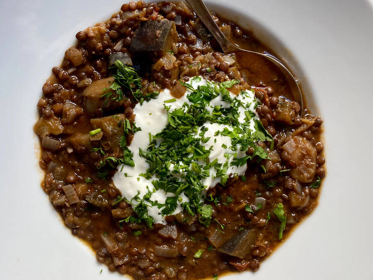

Spicy lentil and aubergine stew
Ingredients
- 2 aubergines
- 180g puy lentils
- 1 red onion
- 200g cherry tomatoes
- vegetable stock
- 1 close of garlic
- 2 chillies
- 3 tbsp olive oil
Preparation
- Chop the onion and garlic. Halve cherry tomatoes, and cut eggplant into bite-sized pieces.
- Add olive oil to a large pot over medium-high heat. Add the onion, garlic, and thyme leaves and sauté until soft and translucent, approx. 5 - 7 min. Remove the onion mixture from the pan, leaving as much oil as you can behind, and set aside.
- In the residual oil (add more if needed), fry the eggplant over high heat until golden brown and softened. Lower heat slightly and stir in tomatoes. Cook for another few minutes until tomatoes soften.
- Deglaze with wine, then add the onion mixture back to the pot along with the broth, water, lentils, harissa, salt and pepper. Bring to a boil, then let simmer for approx. 40 minutes or until lentils are cooked through. Meanwhile, finely chop the preserved lemon and stir into the stew. Salt and pepper to taste again, then serve topped with a dollop of yogurt and cilantro. Enjoy!